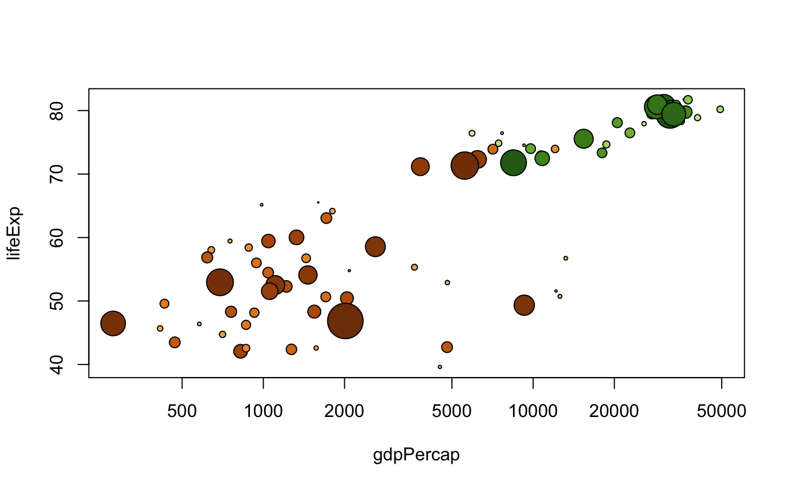
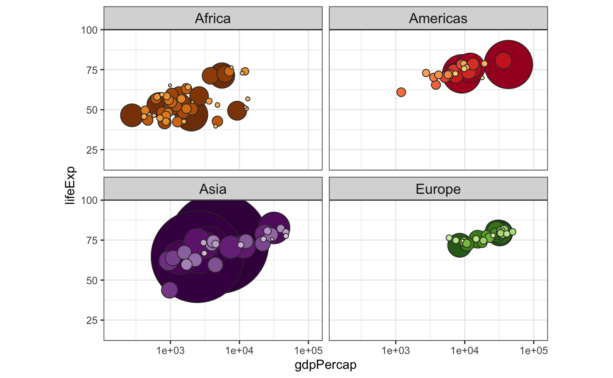

Color schemes for the countries and continents in the Gapminder data.
country_colors
Named character vectors giving country and continent colors:
colors for the 142 countries
colors for the 5 continents
gapminder for a description of the dataset
# ggplot2 examples are below these base graphics examples! # using country_colors with base graphics # for convenience, integrate the country colors into the data.frame gap_with_colors <- data.frame(gapminder, cc = I(country_colors[match(gapminder$country, names(country_colors))])) # bubble plot, focus just on Africa and Europe in 2007 keepers <- with(gap_with_colors, continent %in% c("Africa", "Europe") & year == 2007) plot(lifeExp ~ gdpPercap, gap_with_colors, subset = keepers, log = "x", pch = 21, cex = sqrt(gap_with_colors$pop[keepers]/pi)/1500, bg = gap_with_colors$cc[keepers])if (require(ggplot2)) { # with ggplot2, just provide country_colors to scale_color_manual(): # ... + scale_color_manual(values = country_colors) + ... # simple line plot for 5 countries h_countries <- c("Egypt", "Haiti", "Romania", "Thailand", "Venezuela") h_dat <- droplevels(subset(gapminder, country %in% h_countries)) h_dat$country <- with(h_dat, reorder(country, lifeExp, max)) ggplot(h_dat, aes(x = year, y = lifeExp)) + geom_line(aes(color = country)) + scale_colour_manual(values = country_colors) + guides(color = guide_legend(reverse = TRUE)) # spaghetti plot for lots of countries ggplot(subset(gapminder, continent != "Oceania"), aes(x = year, y = lifeExp, group = country, color = country)) + geom_line(lwd = 1, show_guide = FALSE) + facet_wrap(~ continent) + scale_color_manual(values = country_colors) + theme_bw() + theme(strip.text = element_text(size = rel(1.1))) # bubble plot for lots of countries gap_bit <- subset(gapminder, year == 2007 & continent != "Oceania") gap_bit <- gap_bit[with(gap_bit, order(continent, -1 * pop)), ] ggplot(gap_bit, aes(x = gdpPercap, y = lifeExp, size = pop)) + scale_x_log10(limits = c(150, 115000)) + ylim(c(16, 96)) + geom_point(pch = 21, color = 'grey20', show_guide = FALSE) + scale_size_area(max_size = 40) + facet_wrap(~ continent) + coord_fixed(ratio = 1/43) + aes(fill = country) + scale_fill_manual(values = country_colors) + theme_bw() + theme(strip.text = element_text(size = rel(1.1))) }#>#> Warning: `show_guide` has been deprecated. Please use `show.legend` instead.#> Warning: `show_guide` has been deprecated. Please use `show.legend` instead.